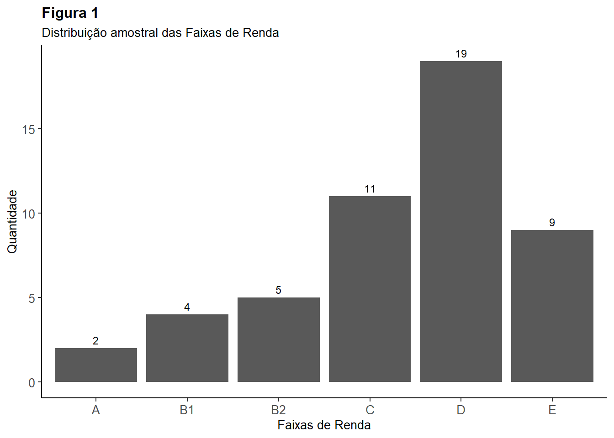
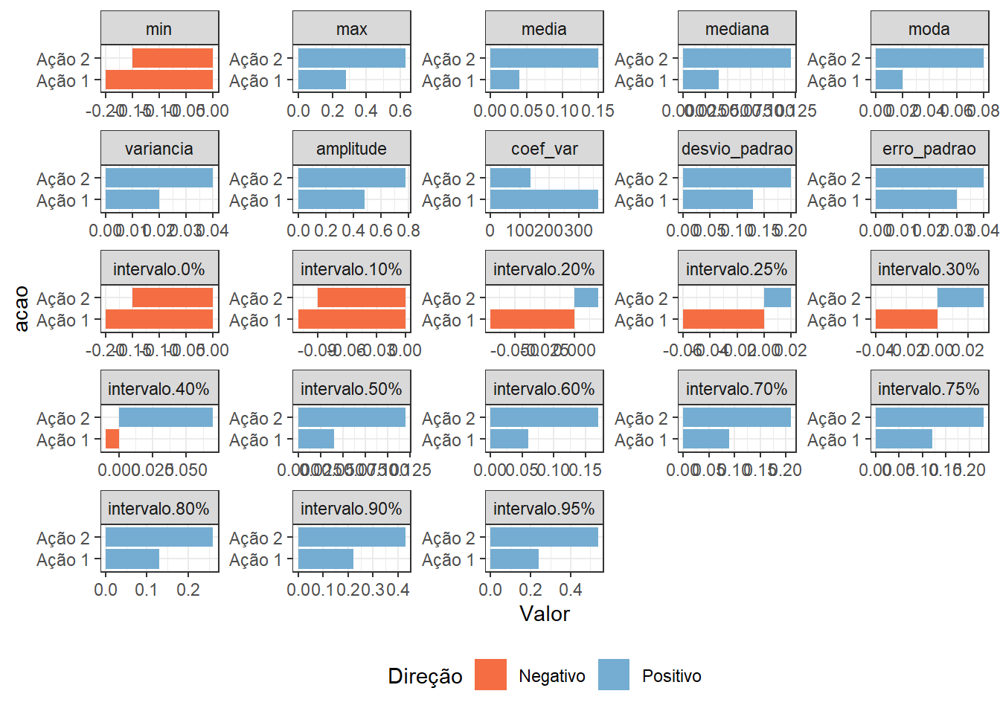

# Instalando pacotes
if (!require("pacman")) install.packages("pacman")
pacman::p_load(tidyverse, here, readxl, janitor, dplyr, magrittr, psych, gt, kableExtra)Introdução à Estatística
Lista de Exercícios
O banco de dados está na planilha Lista de Exercício Complementares: aba Exercício 1.
- Na análise de concessão de empréstimos, uma variável potencialmente importante é a renda da pessoa. O gerente de um banco coleta uma base de dados de seus correntistas e extrai a variável “renda mensal (R$)” para 50 pessoas. Embora se trate de uma variável quantitativa, deseja realizar uma análise por meio de tabela de frequências. Neste sentido, pede-se:
# Importando o banco
path <- here::here("dados", "Lista de Exercícios - Complementares.xlsx")
bd1 <- readxl::read_excel(path, sheet = 1, range = cell_cols("A:B"))
bd1 <- bd1 %>% janitor::clean_names()
bd1 %>% glimpse()a) Classifique os correntistas em faixas de renda, sendo: 0-2.000; 2.001-4.000; 4.001- 6.000; 6.001-8.000; 8.001-10.000 e 10.001-12.000.
bd1 <- bd1 |>
mutate(fx_renda = case_when(
renda_r <= 2000 ~ "E",
renda_r > 2000 & renda_r <= 4000 ~ "D",
renda_r > 4000 & renda_r <= 6000 ~ "C",
renda_r > 6000 & renda_r <=8000 ~ "B2",
renda_r > 8000 & renda_r <= 10000 ~ "B1",
T ~ "A"
))
bd1 |> glimpse()b) Em seguida, elabore a tabela de frequências para as faixas de renda acima.
bd1 |> group_by(fx_renda) |>
summarise(total = n()) |>
ggplot2::ggplot(aes(fx_renda, total)) +
geom_col() +
theme_classic() +
theme(axis.text=element_text(size=10), #change font size of axis text
axis.title=element_text(size=10), #change font size of axis titles
plot.title=element_text(size=12, face = "bold"), #change font size of plot title
legend.text=element_text(size=10), #change font size of legend text
legend.title=element_text(size=10),
plot.subtitle = element_text(size = 10)) + #change font size of legend title
geom_text(aes(label= total, vjust = -0.5), size = 3) +
ggtitle(label = "Figura 1", subtitle = "Distribuição amostral das Faixas de Renda") +
ylab("Quantidade") +
xlab("Faixas de Renda")
2.Um analista do mercado acionário coletou os retornos mensais de duas ações que pretende indicar aos seus clientes. Calcule as estatísticas descritivas para as duas variáveis, incluindo o coeficiente de correlação entre os retornos. O banco de dados com os retornos percentuais mensais está na planilha Lista de Exercício Complementares: aba Exercício 2.
Estatísticas descritivas: média, mediana, moda, quartis, decis, valor mínimo, valor máximo, amplitude, variância, desvio padrão, erro padrão, coeficiente de variação
# Importando o banco
path <- here::here("dados", "Lista de Exercícios - Complementares.xlsx")
bd2 <- readxl::read_excel(path, sheet = 2, range = cell_cols("A:C"))
bd2 <- bd2 %>% janitor::clean_names()
bd2 %>% glimpse()mode_test <- function(x) {
d <- density(x)
d$x[which.max(d$y)]
}
bd2.1 <- bd2 |> select(2:3)
table2 <- as.data.frame(sapply(bd2.1, function(bd2.1)
c(media = mean(bd2.1),
mediana = median(bd2.1),
moda = mode_test(bd2.1),
min = min(bd2.1),
max = max(bd2.1),
variancia = var(bd2.1),
desvio_padrao = sd(bd2.1),
erro_padrao = sd(bd2.1)/sqrt(length(bd2.1)),
coef_var = sd(bd2.1) / mean(bd2.1) * 100,
amplitude = max(bd2.1) - min(bd2.1),
intervalo = quantile(bd2.1, probs = c(0,.1, .2, .25, .3, .4, .5,
.6, .7, .75, .8, .9, .95))
)))
table2 <- table2 |> mutate_if(is.character, as.numeric)|>
mutate_if(is.numeric, round_half_up, digits = 2)
table2 <- tibble::rownames_to_column(table2, "var")
rownames(table2) <- table2[,1]
# Transformando a tabela em um banco de dados. Fica mais fácil para plotar em gráficos
bd2.2 <- gather(table2, key = "Ação",
value = "Valor",
-var
)
bd2.2 <- bd2.2 |> transform(var = factor(var,
levels=c("min", "max", "media", "mediana", "moda", "variancia", "amplitude",
"coef_var", "desvio_padrao", "erro_padrao", "intervalo.0%",
"intervalo.10%", "intervalo.20%", "intervalo.25%",
"intervalo.30%", "intervalo.40%", "intervalo.50%",
"intervalo.60%", "intervalo.70%", "intervalo.75%",
"intervalo.80%", "intervalo.90%", "intervalo.95%")))
bd2.2 |> mutate(ref = case_when(
Valor >= 0 ~ "Positivo",
Valor < 0 ~ "Negativo"
)) |>
mutate(acao = case_when(
`Ação` == "acao_1" ~ "Ação 1",
`Ação` == "acao_2" ~ "Ação 2"
)) |>
ggplot2::ggplot(aes(acao, Valor, fill = ref)) +
geom_col() +
scale_fill_manual(name = "Direção", values=c("#f46d43", "#74add1")) +
facet_wrap(~(var), scales = "free", ncol = 5) +
theme_bw() +
theme(legend.position = "bottom") +
#geom_text(aes(label = Valor), size = 2.5)+
coord_flip()
# bd2.2 |> glimpse()
# Plotando a tabela
table2 |> select(-1) |> kableExtra::kbl(caption = "Estatísticas Descritivas Ex. 2",
col.names = c("Ação 1", "Ação 2")) %>%
kableExtra::kable_classic(full_width = F, html_font = "Cambria")| Ação 1 | Ação 2 | |
|---|---|---|
| media | 0.04 | 0.15 |
| mediana | 0.04 | 0.12 |
| moda | 0.02 | 0.08 |
| min | -0.20 | -0.15 |
| max | 0.28 | 0.63 |
| variancia | 0.02 | 0.04 |
| desvio_padrao | 0.13 | 0.20 |
| erro_padrao | 0.03 | 0.04 |
| coef_var | 367.06 | 134.86 |
| amplitude | 0.48 | 0.78 |
| intervalo.0% | -0.20 | -0.15 |
| intervalo.10% | -0.11 | -0.09 |
| intervalo.20% | -0.07 | 0.02 |
| intervalo.25% | -0.06 | 0.02 |
| intervalo.30% | -0.04 | 0.03 |
| intervalo.40% | -0.01 | 0.07 |
| intervalo.50% | 0.04 | 0.12 |
| intervalo.60% | 0.06 | 0.17 |
| intervalo.70% | 0.09 | 0.21 |
| intervalo.75% | 0.12 | 0.23 |
| intervalo.80% | 0.13 | 0.26 |
| intervalo.90% | 0.22 | 0.43 |
| intervalo.95% | 0.24 | 0.54 |